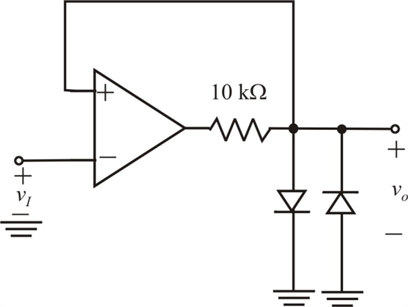
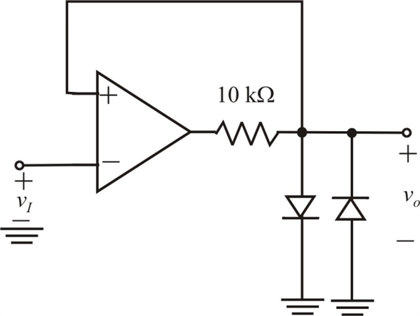
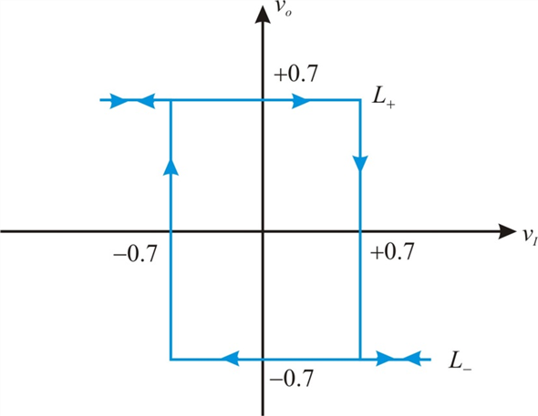

Refer to Figure P17.26 in the text book for the op-amp circuit.
Remove the resistance,  and short-circuit the resistance,
and short-circuit the resistance, . Redraw the circuit.
. Redraw the circuit.

Refer to Figure P17.26 in the text book for the op-amp circuit.
Remove the resistance, and short-circuit the resistance,. Redraw the circuit.

The output of the circuit is the voltage across the diodes as the diodes are connected in parallel across the output.
The forward voltage drop of the diodes is
When the voltage across the diodes is greater than  , one diode conducts and is directly connected to ground. Therefore, the maximum positive output voltage is
, one diode conducts and is directly connected to ground. Therefore, the maximum positive output voltage is  .
.
Similarly, when the voltage across the diodes less than  , the other diode conducts and is directly connected to ground. Therefore, the maximum negative output voltage is.
, the other diode conducts and is directly connected to ground. Therefore, the maximum negative output voltage is.
Therefore, the output levels are  .
.
The threshold levels also are as the output appears at the non-inverting terminal.
Draw the transfer characteristics, versus  .
.

Thus, the transfer characteristics are drawn.